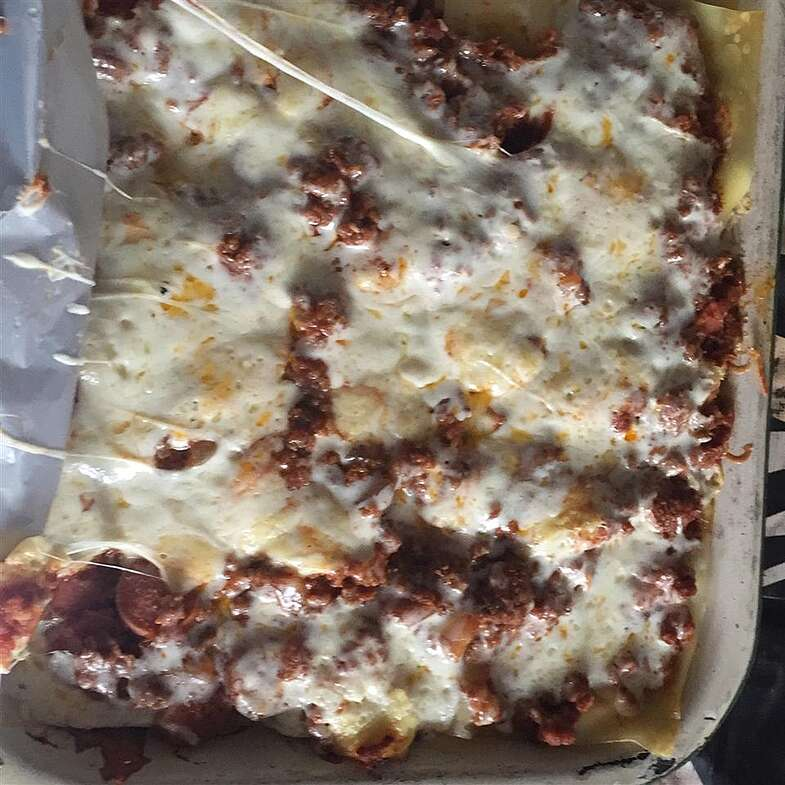

Lasagna

EASIEST LASAGNA EVER
12 Servings
prep time:
20 Minutes
cook time:
45 Minutes
total time:
1 Hour 5 Minutes
A dish that is easy to prepare on a week night.
Ingredients
- 9 lasagna noodles
- 1 tablespoon olive oil
- 1 pound ground beef
- 1 onion, diced
- Koster salt and freshly ground black pepper, to taste1
- 1 (28-ounce) can crushed tomatoes
- 1 tablespoon Italian seasoning
- 1 (15-ounce) package whole milk ricotta
- 3 1/2 cups shredded mozzarella, devided
- 1 large egg, beaten1
- 1/4 cup freshly grated Parmesan
- 2 tablespoons chopped fresh parsley leaves
Steps
- Preheat Oven to 350 deg.lightly oil a baking dish or coat with nonstick
spray.
- In a large pot of boileing salted water, cook lasagna noodles
according to packet instructions.
- Heat olive oil in a large skillet over medium high heat.
Add ground beef and onions and cook until beef has browned,
about 3-5 minutes,making sure to crumble the beef as it cooks;
season with salt and pepper,to taste. Drain exstra fat.
Strir in tomatoes and italian seasoning until well combined.
- In a medium bowl,combine ricotta, 1/2 cup mozzarella according
egg;set asside.
- Spread one cup of tomato mixture onto the bottom of a 9x13 baking
dish;top with 3 lasagna noodles,1/2 of ricotta cheese mixture
and 1 cup mozarella cheese.
Repeat with a second layer.Top with remaining noodles,tomato mixture,
1 cup mozarella cheese and parmesan.
- Place into oven and bake for 35-45 minutes, or until bubbling.
Then broil for 2-3 minutes, or until top is browned in spots.
- Let cool 15 minutes. Serve,garnisged with parsley,
if desired.